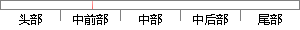

此外，所有用户都可以拥有对视频的点赞、评论、分享的权限。
片段位置图

相似结果|
相似片段 1：的登录者，不同类型的用户被管理员赋予了各种不同的角色．菜单角色、数据角色，因此拥有不同的功能操作权限和数据权限)。用户延伸的业务信息管理主要是指用户对视频的评论信息以及在社交渠道的分享信息，管理员
|
※ 片段修改建议 ※
近似词参考：- 此外：另外 别的
- 所有：全部
- 有用：有效
- 拥有：具有
- 评论：批评
系统自动生成语句：另外，全部用户都可以具有对视频的点赞、批评、分享的权限。
注：本片段修改建议为系统自动生成，仅供参考。